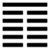

Sơn Địa Bác (剝 bō)
Bí là trang sức, trau giồi; trau giồi tới cực điểm thì mòn hết. Cho nên sau quẻ Bí tới quẻ Bác. Bác là mòn, là bóc, lột bỏ cho tiêu mòn lần đi.
Thoán từ
剝: 不利有攸往．
Bác: Bất lợi hữu du vãng.
Dịch: Tiêu mòn: Hễ tiến tới (hành động) thì không lợi.
Giảng: Theo tượng quẻ, năm hào âm chiếm chỗ của dương, âm tới lúc cực thịnh, dương chỉ còn có một hào, sắp đến lúc tiêu hết. Do đó gọi là quẻ thịnh, dương, chỉ còn một hào sắp đến lúc tiêu hết. Do đó gọi là quẻ Bác. Ở thời tiểu nhân đắc chí hoành hành, quân tử (hào dương ở trên cùng) chỉ nên chờ thời, không nên hành động. Chờ thời vì theo luật tự nhiên, âm thịnh cực rồi sẽ suy, mà dương suy cực rồi sẽ thịnh. (Lão Tử khuyên: “đại trí nhược ngu, đại dũng nhược khiếp, đại xảo nhược chuyết (vụng) “nghĩa là phải tạm giấu cái khôn, cái khéo, cái dũng của mình để được yên thân đợi chờ cơ hội).
Thoán truyện: giảng thêm: nên thuận đạo trời mà ngưng mọi hoạt động vì nội quái là Khôn, có nghĩa là thuận, ngoại quái là Chấn có nghĩa là ngưng; mà đạo trời là hết hao mòn (tiêu) thì sẽ phát sinh (tức) – nói về các chào dương; mà hết đầy (doanh) thì sẽ trống không (hư) – nói về các hào âm trong quẻ này.
Đại tượng truyện: chỉ xét tượng của quẻ mà đưa ra một nghĩa khác: ngoại quái là núi, nội quái là đất; núi ở trên đất, đất là nền móng của núi; đất có dày thì núi mới vững; vậy người trên (nhà cầm quyền) phải lo cho dân an cư lạc nghiệp thì địa vị của người trên mới vững. Ý đó thêm vào, không có trong thoán từ.
Ý nghĩa các hào:
1.
初六: 剝床以足, 蔑貞, 凶．
Sơ lục: Bác sàng dĩ túc, miệt trinh, hung.
Dịch: Hào 1, âm: như cắt (phá hoại) chân giường, dần dần sẽ làm tiêu diệt đạo chính của người quân tử, xấu.
Giảng: âm (tiểu nhân) bắt đầu tiêu diệt dương (quân tử ), cũng như bắt đầu phá cái giường từ dưới chân trở lên.
2.
六二: 剝床以辨, 蔑貞, 凶．
Lục nhị: bác sàng dĩ biện, miệt trinh, hung.
Dịch: Hào 2, âm: như phá tới then giường (có người dịch là thành giường, hay sườn giường), tiêu diệt đạo chính của người quân tử, xấu.
Giảng: Nghĩa hào này cũng như hào 1: bọn tiểu nhân đã tiến thêm một bước nữa, phá tới then giường rồi, chưa tới mặt giường.
3.
六三: 剝之, 无咎．
Lục tam: Bác chi, vô cữu.
Dịch: Hào 3 âm: Phá bỏ bè đảng của mình, không có lỗi.
Giảng: Hào này cũng là âm nhu, tiểu nhân, nhưng vì ứng với hào dương, quân tử, ở trên cùng, cho nên theo hào đó mà bỏ các hào âm ở trên và dưới nó (tức các hào 1, 2, 4) chịu mất lòng với các hào âm này (lời Tiểu tượng truyện) mà theo đạo chính, cho nên không có lỗi.
4.
六四: 剝床以膚, 凶．
Lục tứ: Bác sàng dĩ phu, hung.
Dịch: hào 4, âm: phá giường mà xẻo tới da thịt người nằm trên giường nữa, xấu.
Giảng: Hào âm này đã lên tới ngoại quái, thế là tiểu nhân đã hoành hành, quân tử bị hại quá đau, tai họa bức thiết quá rồi; xấu.
5.
六五: 貫魚, 以宮人寵, 无不利．
Lục ngũ: Quán ngư, dĩ cung nhân sủng, vô bất lợi.
Dịch: Hào 5, âm: Dắt bầy cung nhân như một xâu cá (ám chỉ bầy tiểu nhân), để lên hầu vua (tức theo người quân tử, hào dương ở trên cùng), như vậy là tiểu nhân biết thuận tòng quân tử, không có gì là không lợi.
Giảng: Hào này làm thủ lãnh bầy âm. Theo nghĩa mấy hào trên, chúng ta tưởng hào này càng phá mạnh hạng quân tử hơn nữa; nhưng ngược lại. Hào từ lấy lẽ rằng hào 5, ở sát hào dương ở trên cùng thân cận với 6, chịu ảnh hưởng tốt của 6, nên dắt cả bầy âm (ví như một xâu cá – cá thuộc loài âm) để theo hào 6 quân tử cũng như bà hậu dắt bầy cung phi lên hầu vua. Thế là theo đạo chính, cho nên không gì là không lợi.
Theo Phan Bội Châu, sở dĩ cổ nhân tới hào này bỏ cái nghĩa âm tiêu diệt dương, mà cho cái nghĩa âm thuận theo dương, là để khuyến khích tiểu nhân cải tà qui chánh, mà giúp đỡ quân tử. Kinh dịch "Vị quân tử mưu” (lo tính cho quân tử) là nghĩa đó. Có thể như vậy. Lý do chính thì coi hào sau ta sẽ thấy.
6.
上九: 碩果不食, 君子得輿, 小人剝廬．
Thượng cửu: thạc quả bất thực,
Quân tử đắc dư, tiểu nhân bác lư.
Dịch: Hào trên cùng, dương: Còn một trái lớn trên cây, không hái xuống ăn (ý nói dương tức quân tử không bao giờ hết). Quân tử ở hào này được quần chúng (dư) theo; còn tiểu nhân thì biết rằng nếu diệt hết quân tử tức lá phá đổ nhà chúng ở (chúng cũng không còn).
Giảng: Cả quẻ chỉ có mỗi hào này là dương cho nên ví với trái cây lớn còn lại trên cây, không hái xuống ăn thì có ngày nó sẽ rụng mà mọc mầm, như vậy là đạo quân tử không bao giờ hết. Hào 3 và 5 kéo các hào âm khác theo hào dương này, cho nên bảo là quân tử được dân chúng theo. Hào dương này ở trên cùng, cũng như cái nhà che cho tất cả các hào âm ở dưới. Nếu bọn tiểu nhân phá nhà đó cho sập – nghĩa bóng là không còn quân tử thì quốc gia suy vong, chủng tộc tiêu diệt- thì chúng cũng không sống được, không có chốn dung thân.
Vậy ta thấy sở dĩ Chu Công, người viết Hào từ, cho hào 5 theo hào trên cùng (âm theo dương) là vì lẽ có thế xã hội mới tồn tại được, không khi nào người tốt bị diệt hết.
Quẻ này nói về thời âm thịnh dương suy, tiểu nhân tàn hại quân tử, tiểu nhân tuy rất đông, nhưng vẫn có một số (hào 3 và 5) hiểu đạo cải quá, đứng về phe quân tử, và khi xã hội lâm nguy thì ủng hộ quân tử. Người quân tử mới đầu chỉ nên im hơi lặng tiếng mà chờ thời, chuẩn bị cho lúc thịnh trở lại.
Đó là luật âm dương trong vũ trụ; vũ trụ luôn luôn có đủ cả âm, dương ; khi âm cực thịnh, vẫn còn dương, khi dương cực thịnh cũng vẫn còn âm, âm dương cứ thay nhau lên xuống, thế thôi.